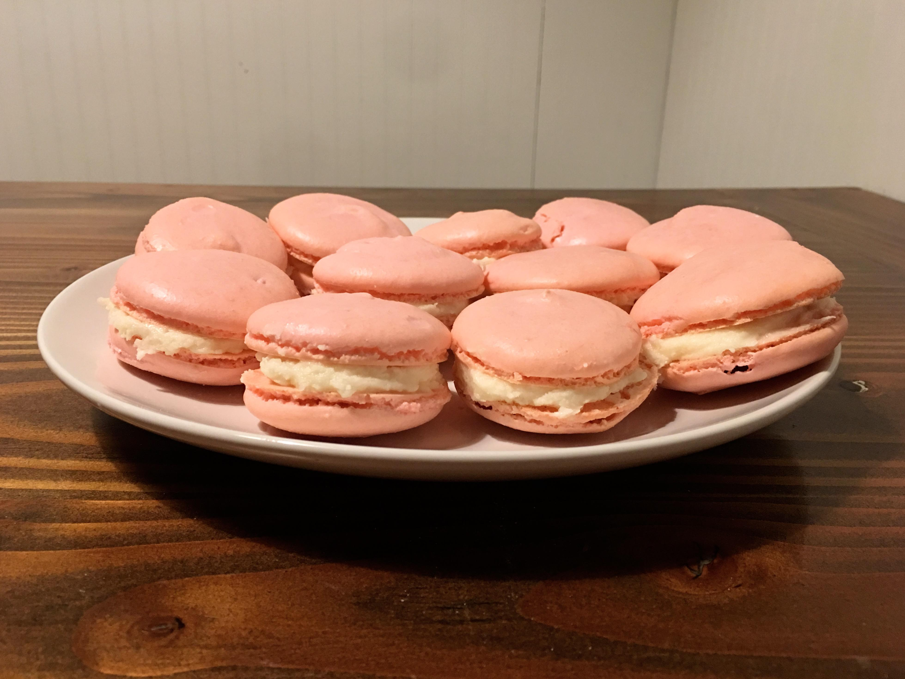
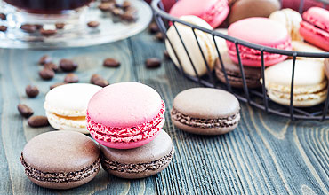

WELCOME TO BAKERS CORNER
Our Bakery is an American-style pastry kitchen established in 2004 to bring the bona fide taste of American home heating to New York. The organization opened its first branch on Portobello Road in Notting Hill in 2007 and has since propelled a further six branches crosswise over New York and Surrey in South Kensington, Soho, Spitalfields, Islington and Richmond.

OUR SPECIALITY
We provide services for special occasions (such as weddings, anniversaries, birthday parties, business networking events, etc.)or customized baked products for people who have allergies or sensitivities to certain foods (such as nuts, peanuts, dairy or gluten, etc.). Our bakery provide you a wide range of cake designs such as sheet cakes, layer cakes, wedding cakes, tiered cakes, fondant cakes etc. We are also specialize in traditional or hand-made types of baked products made with locally milled flour,without flour bleaching agents or flour treatment agents, baking what is sometimes referred to as artisan bread.



OUR BAKERY APPROACH
Our Bakery primarily produces and sells flour-based food baked in oven such as breads, cookies, cakes, pastries, and pies. Also served and delievers coffee and tea to customers. Confectionery items are also made in our bakery.
One of the key factors in our Bakery’s prosperity has been its ethos that cakes taste best when they’ve been naturally heated utilizing the very same fixings and methods as those utilized in home preparing. Consequently, every single Bakery branch has its own kitchen and a group of occupant master pastry specialists and cake decorators.
We offer our clients a full scope of breads, forte breads, morning merchandise, cakes and baked goods. Our bread is heated day by day at our pastry shop in East Horsley and is conveyed to our twelve shops. We utilize profoundly gifted specialty dough punchers to guarantee each portion of bread is flawless without fail. Our pastry specialists work during that time with the goal that the portion of bread you purchase toward the beginning of the day is crisp out of the stove!
HEALTHY FOOD DELIVERED TO YOU
Our Bakery primarily provides you FREE-ON-DELIVERY service at any location. We deliver our services to you by UBER EATS, MEAL PREP DELIVERY, EPICURED. In this pandemic, Chef prepared healthy and fresh meals delivered to your doorsteps just keeping our customers inside to eat these days. It’s wonderful for people to be able to pull a tasty effortless meal from the fridge and enjoy!
Can also Book your order by just a Phone call and get delivery to your doorsteps within 30 minutes only. Otherwise, Get a Free service.
Gives you 30% discount on your purchase every Sunday.
ICE CREAM TIME
- Our chefs work in a diverse array of kitchen and culinary environments.
- Day-to-day operations can also require the pastry chef to research recipe concepts and develop and test new recipes. Usually the pastry chef does all the necessary preparation of the various desserts in advance, before dinner seating begins. The actual plating of the desserts is often done by another station chef, usually the garde manger, at the time of order. The pastry chef is often in charge of the dessert menu, which besides traditional desserts, may include dessert wines, specialty dessert beverages, and gourmet cheese platters.
- Pastry chefs are also expected to fully understand their ingredients and the chemical reactions that occur when making fine pastries. Precise timing and temperatures are critically important.
- It is generally preferred to weigh the ingredients as opposed to measuring by cup, as weighing offers far more consistent baking results. In larger kitchens, the pastry chef may have a number of other chefs working in their station, each responsible for specific types of pastries:
- boulanger (baker):
- responsible for breads, cakes and breakfast pastries.
- confiseur (confectioner):
- responsible for candies and petits fours
- décorateur (decorator):
- responsible for specialty cakes and show pieces
- glacier:
- responsible for cold and frozen desserts
OUR CHEFS AND THEIR DUTIES
- Make baked goods and desserts applicable to the restaurant menu.
- Able to prepare a wide variety of desserts and bread items from scratch.
- train or supervise others.
- Responsible for recipe creation and menu innovation.
- Responsible for inventory and cost control.
- Ability to work in a team-driven environment, take direction, offer direction and assist with problem solving.
- Conducting food tastings for waitstaff and potential clients.